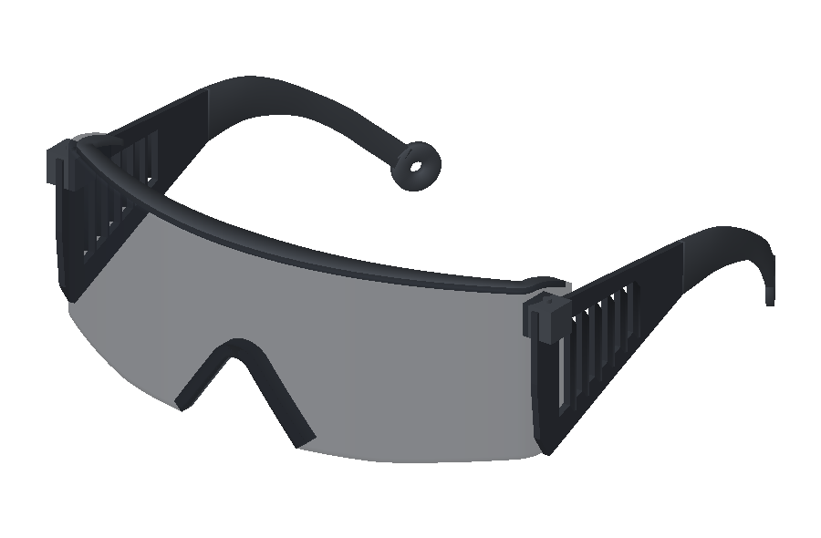
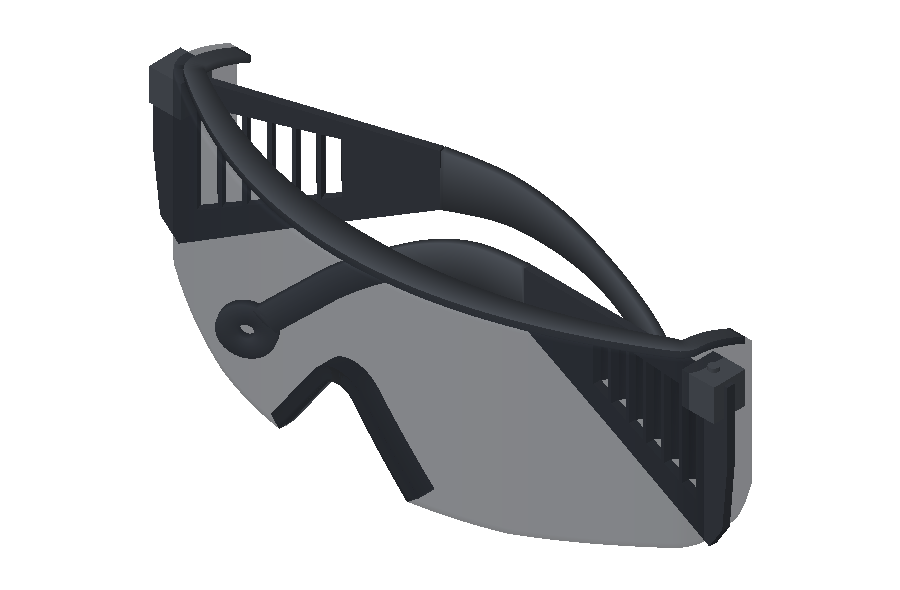
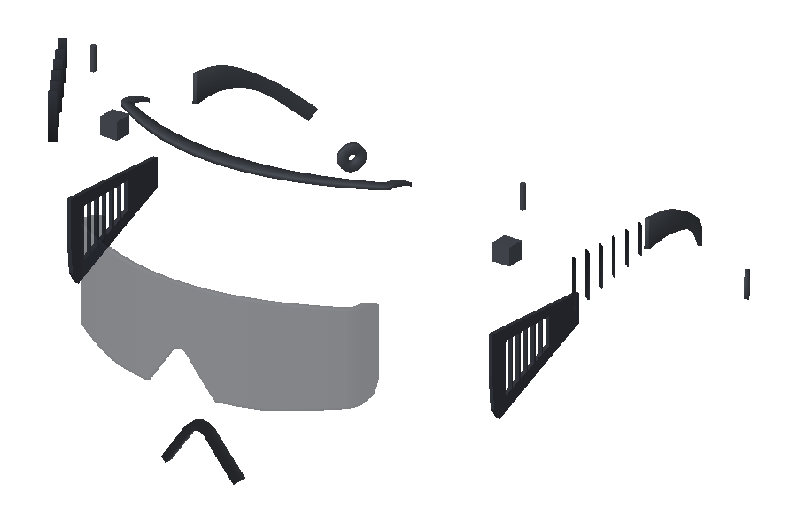
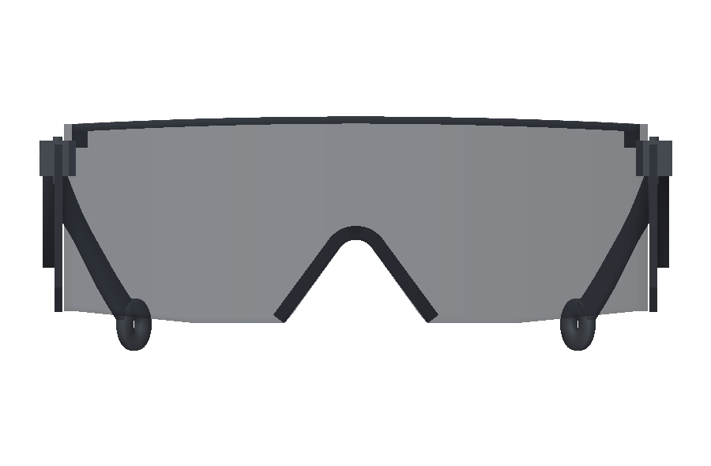
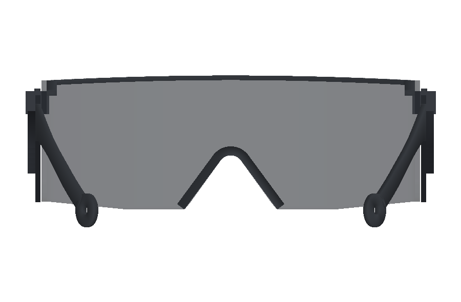
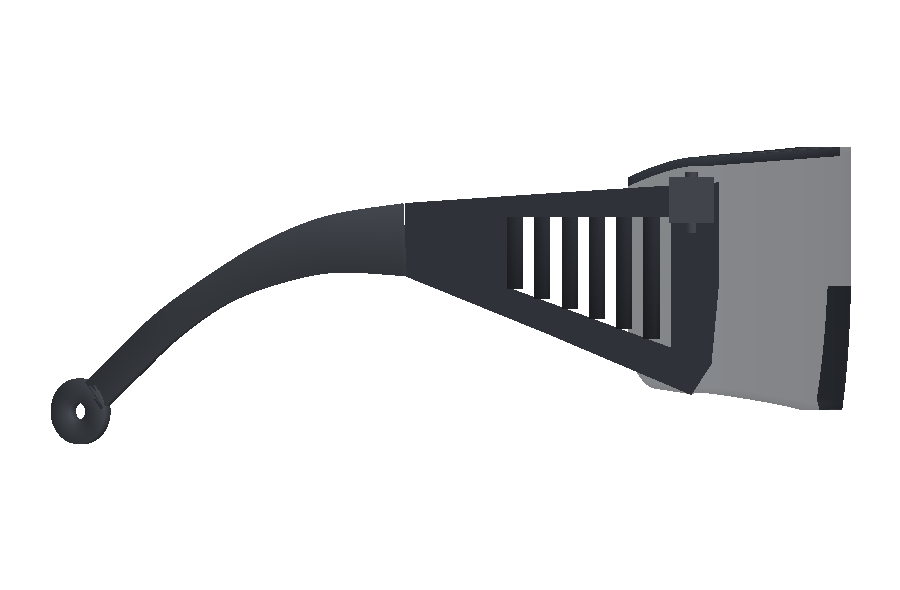
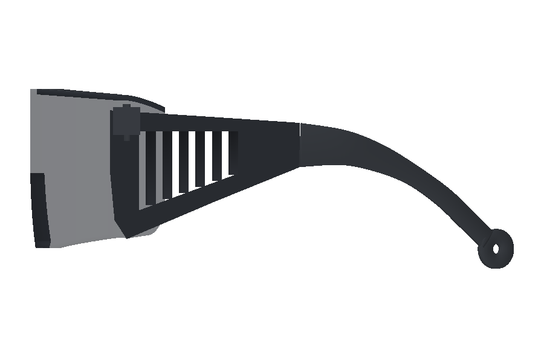
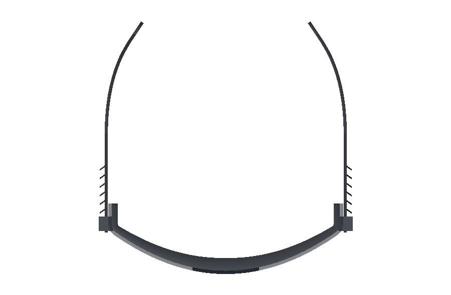
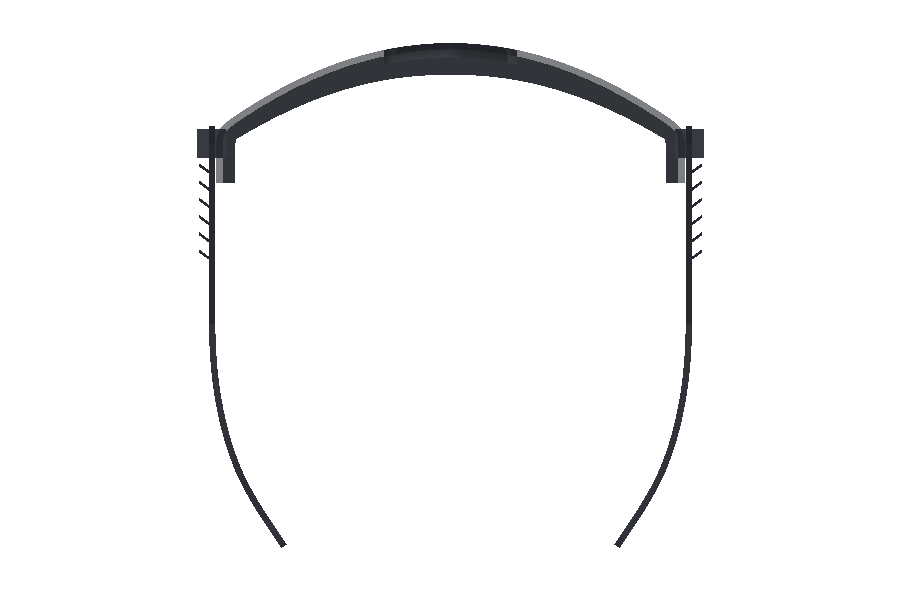

Occhiali protettivi · Sofia Angelini
AERIS


Scorri per vedere le aste in movimento
Design di prodotto
Una forma continua.
AERIS nasce attorno a una sola lente avvolgente. Da davanti si legge come una linea continua. Di profilo emergono i ripari ventilati e il raccordo con le aste.
- Lente fumé
- La lente curva forma il frontale. L’incavo lascia spazio al naso e il bordino superiore ne segue il profilo.
- Ventilazione laterale
- I ripari seguono i lati del viso. Le sei alette di ciascun lato scandiscono le aperture per il passaggio dell’aria.
- Aste pieghevoli
- Le cerniere collegano il frontale alle aste. I terminali curvi completano il profilo e si ripiegano verso l’interno durante la chiusura.
Vista esplosa
Ogni parte, al suo posto.

Componenti
Sei modi di vestire AERIS.
Tocca un colore per vedere come cambiano montatura, lente e dettagli.
Nero fumé
Da ogni angolazione.






Prova virtuale
Come ti sta AERIS?
Accendi la fotocamera, scegli i colori e salva o condividi il risultato.
Provalo su di te